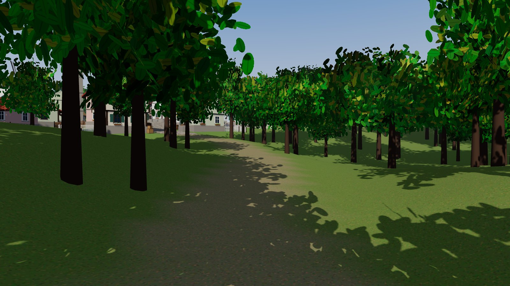

Paged (virtual) shadow maps for the sun on WebGPURenderer: shadow depth is drawn once into
128×128 pages at the resolution the screen needs, and kept until something moves.

Sundial runs on three.js WebGPURenderer with its WebGPU backend, which this browser does not
provide. Try Chrome or Edge 113+, Safari 26, or Firefox 141+ on Windows. Behind this note is a screenshot of
the live demo.
GitHub · npm · How it works